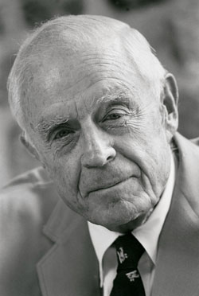

<!DOCTYPE html>
<html>
    <title>Mr.Watson webpage</title>
</html>
</head>
<body>
    <h1>Thomas J.watson</h1>
    <p>
        Thomas John Watson Jr. (January 14, 1914 – December 31, 1993) was an American businessman, political figure, Army Air Forces pilot, and philanthropist. The son of IBM Corporation founder Thomas J. Watson, he was the second IBM president (1952–71), the 11th national president of the Boy Scouts of America (1964–68), and the 16th United States Ambassador to the Soviet Union (1979–81). He received many honors during his lifetime, including being awarded the Presidential Medal of Freedom by Lyndon B. Johnson in 1964. Fortune called him "the greatest capitalist in history" and Time listed him as one of "100 most influential people of the 20th century"
    </p>
    
</body>
</html>
    <ul>
        <li>Home</li>
        <li>Biography</li>
        <li>Contact</li>
        <li>about</li>
</ol>

<table border="l" cell spacing="0">
    <tr>
        <th>Year</th>
        <th>Education</th>
    </tr>
    <tr>
        <td>2001-2003</td>
        <td>Ideal Model School</td>
    </tr>
</table>
<br>
<a href="https://en.wikipedia.org/wiki/Thomas_J._Watson_Jr.">About ThomasJWatsonJr</a><br>